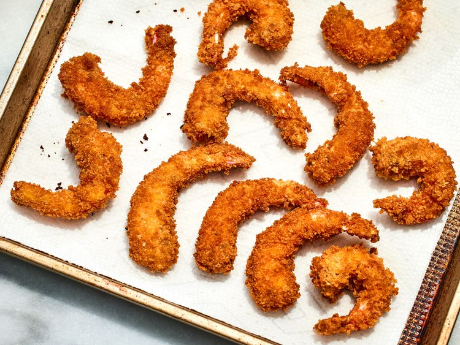

Photo by Dotdash Meredith Food Studios.
These Japanese-Style Deep Fried Shrimp are coated with crispy panko crumbs to make the easiest, tastiest deep-fried shrimp ever.
Step 1
Gather all ingredients.
Step 2
Place shrimp in a bowl and season with salt, pepper, and garlic powder.
Step 3
Mix flour and paprika together in a shallow bowl. Place eggs in a second bowl and panko in a third bowl.
Step 4
Heat oil in a deep fryer or deep skillet to 375 degrees F (190 degrees C). Dip each shrimp into flour mixture, then into egg, and finally into panko crumbs to coat.
Step 5
Fry a few shrimp at a time in the hot oil until golden brown, about 5 minutes.
Step 6
Remove with a slotted spoon and drain on paper towels before serving.
